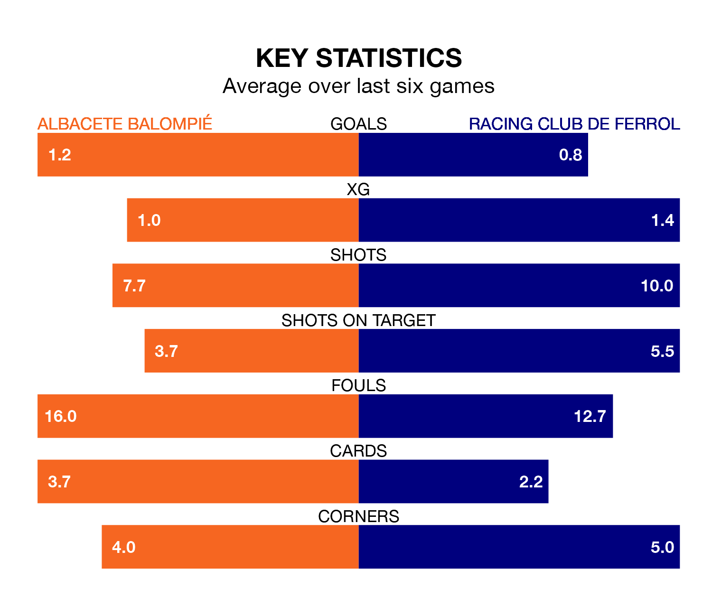

Albacete Balompié welcome Racing Club de Ferrol to the Estadio Carlos Belmonte on late Monday looking to pick up points to end their three-game losing streak.
Albacete's struggles have left them with five points from their last six Segunda División matches, while their opponents have earned the same number from a possible 18.
Albacete are 19th in the table after 31 games, of which they have won seven and drawn 10, earning 31 points.
Racing are nine places ahead of the home side in 10th, with 12 wins and 11 draws putting them on 47 points.
With 38 goals in 31 games so far this season, Ferrol are scoring more than average in the league with 1.2 goals per game. But they are conceding more than average too, letting in 36 goals at a rate of 1.2 per game.
Albacete are also above average scorers, with 1.2 goals per game, compared to a league average of 1.1. They have conceded 1.5 goals per game.
The visitors' Iker Losada Aragunde is among the league's most creative players, racking up seven assists in 31 appearances so far this season, and holding third spot in the Segunda División's assist charts.
For Albacete, Manuel Fuster Lázaro has set up the most goals, having laid on five assists in 31 games.
Albacete's last match was on March 17, a 3-2 loss against Elche CF, with Fuster Lázaro getting the goals for Albacete.
Racing beat Real Valladolid 2-0 last time out, also on March 17, with Losada Aragunde and Nicolás Serrano Galdeano on the scoresheet.
Monday's match will be refereed by José Antonio López Toca, who has taken charge of 14 Segunda División games so far this season, issuing one red card and booking 61 players. He has awarded four penalties.
The last Albacete game López Toca refereed was a 2-0 home loss to Levante UD on October 6. His last Racing match was their 2-2 draw at home against Villarreal B on September 10.
Updated: 12:16 (UTC), 25/03/24